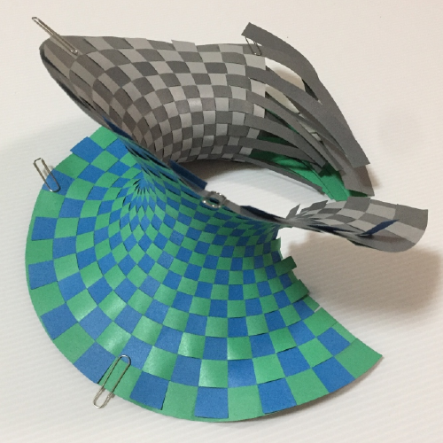
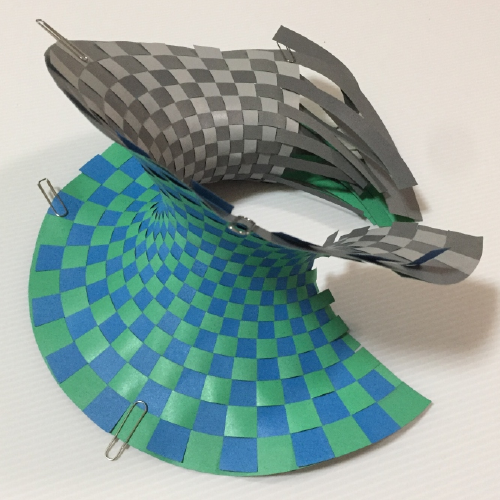

Craft
Question: How can I make the model?
You can:
- Download a paraboloid example or a hyperbolic paraboloid example from my paper on arXiv, and cut by scissors.
- It would be hard, but not impossible.
- Download a paraboloid example or a hyperbolic paraboloid example from my paper on arXiv, and cut by laser cutting machine.
- I'm using Beambox by FLUX.inc.
- Compute the shape of paper strip, instead of downloading the paraboloid.
- This needs setup for Julia environment.
- Buy already cut pieces of paper at Booth (In preparation).
- Ships from Japan.
Images during the making process
 
